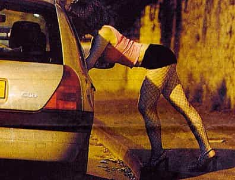

The Dude is a location-independent freelance writer based in Eastern Canada.


Online dating was once considered the garbage bin of the dating world, but is now widely recognized as a valid (if depressing) way for men to rack up quick bangs in a pinch. While most men still dismiss online dating as being somewhat pathetic, the truth is, most men who knock it, will have tried it at least once or twice in secret.
In the last installment of my series on online dating, I introduced you to the six types of guys who try to get laid online.
Now that you know the competition, it would make sense to familiarize yourself with the targets. So, without further ado, here are the six most common types of girls you’ll encounter online, along with some preliminary insights on how to game them. Beware though: this list is hardly comprehensive, and if you venture into the stormy seas of online dating, be prepared to bring a dash of common sense and maybe a bag of lettuce to scare off the landbeasts.
As the name implies, the octomom is a woman with multiple children. What makes her unique though is not simply that she has kids, but that she aspires to find a man to actually commit his own time and resources to help raise them. Without fail, you will find the Octomom declaring that she “is not interested in hookups,” that she is at a loss to comprehend the lack of “good men out there,” and that she aspires find a suitable marriage partner similar to the kinds of men she dated before she shat out half a dozen kids.
How to game: don’t.

Perhaps the most common type of girl online, the land beast can be identified by her rounded figure and high body fat percentage. Arguably, this type needs no explanation; however, it should be noted that not all land beasts are created equal. If the land beast sports a pretty face or nice breasts, she may actually be popular with a subset of male online daters who are more numerous than you might imagine: the chubby chasers. Otherwise, you can bet the land beast will be the easiest, and least satisfying, of pickings you’ll find online.
How to game: include a picture of a big mac on your profile and mention that you like dinner dates.

Like her cousin, the land beast, the Magic Land Beast is fat. The difference is, the magic land beast doesn’t show it in her pictures. Hence the use of the word “magic.” Like a magician making a rabbit disappear into thin air, the magic land beast does the same process in reverse: going from thin to fat in the length of times it takes you get from her profile to her favorite restaurant. If you’re new to online dating, don’t make the mistake of thinking her magic powers make her rare; some even say the magic land beast is more common than the regular land beast.
How to game: Look for girls with lots of angle shots and duckface pictures in their profiles, these are the key to the magic land beast’s photographic illusions.

Found most frequently on OKCupid, the Progressive is a girl who wants to show you she’s different… by doing everything the exact same way every other vaguely progressive college educated white woman does. The Progressive pushes the boundaries with such shockingly edgy and unconventional behaviors as labeling herself a feminist, claiming to be bisexual, getting tattoos, sporting a Skrillex-inspired half-shaven hairstyle, and generally doing everything the postmodern urban life Bible tells her to do. A veritable bastion of status-quo ideas, actions, and postures, you can usually identify her by the complete lack of originality in anything she does, combined with the insinuation that she really does think for herself. The most salient physical feature of the progressive is her white skin and upper middle class income level—no black, Hispanic or working class women of this description have ever been spotted.
How to game: Woo this special snowflake by sending her a message sympathizing with one of the safe, popular, politically correct positions she pays lip service to in her profile, like gay marriage.

One of the most common denizens of the modern dating site, the model who can’t get hired can be identified by the abundance of pictures on her profile where she blows kisses, shows cleavage, or otherwise attention whores in the most obvious way possible. Her second most noteworthy characteristic is that she doesn’t actually meet any of the men who message her; instead, she watches the messages in her inbox build up, viewing the entire enterprise as a video game you win when you receive the “inbox full” message at the top of your inbox. In other words, a narcissist who is attractive enough to get some validation, but not attractive enough to make money off it.
How to game: Make her jealous by posting fake male model pictures, be sure to look your absolute worst if she actually shows up on a date.

She’s attractive. She responds to your messages. She is not a bitch. She’s feminine…
… And the minute you get her on chat, you discover she’s trying to hustle you into her camwhore chatroom for just $50 an hour.
How to game: Have your credit card ready.

So, there you have it: the six most commonly encountered denizens of the modern online dating game. As you may have already discovered, the pickings are often slim in this sea, but as they say in Scotland, why buy the cow when you can get the milk for free? Just remember, if you head online expecting to find a beautiful, feminine, responsive and interesting woman with no children, this woman has an archetype as well: the tooth fairy.
Read Next: The 5 Commandments Of Online Dating